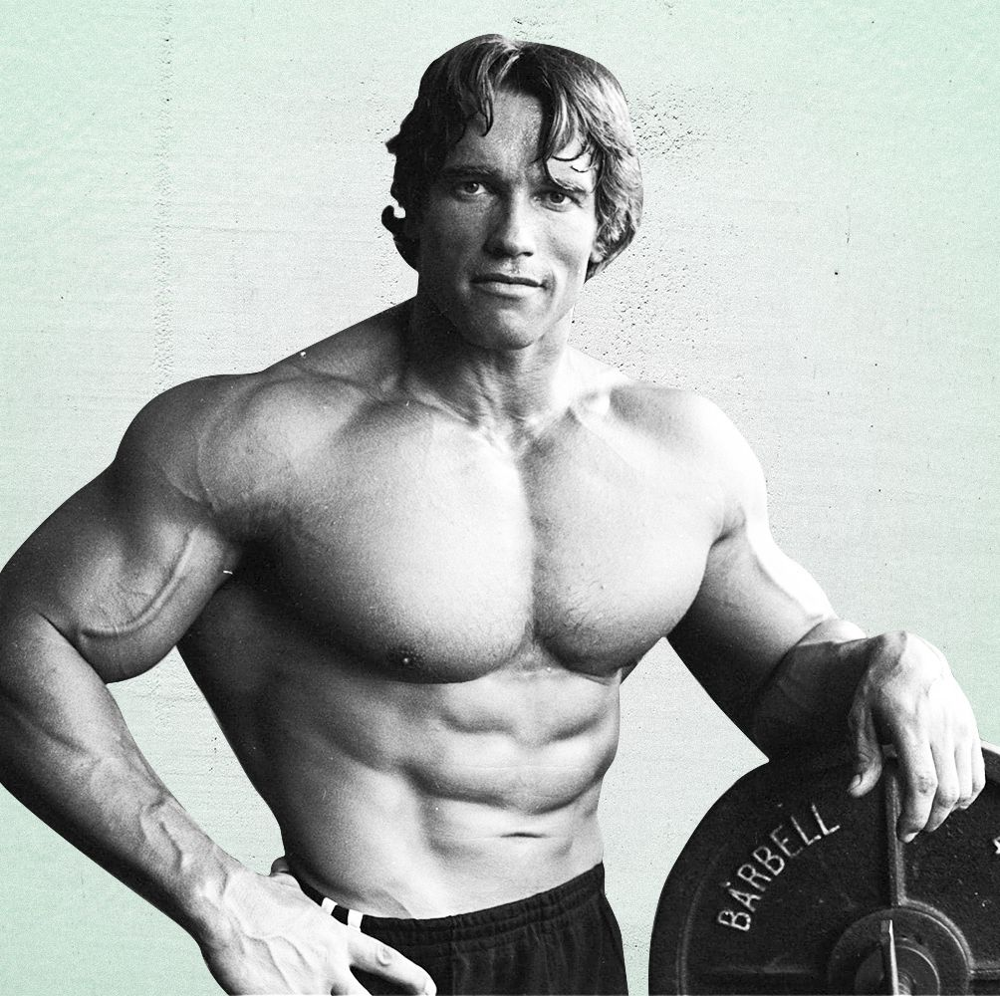

Gold’s Gym and Arnold Schwarzenegger are synonymous in the bodybuilding community. When we think of Arnold crushing a chest workout, squatting with Ed Corney, or posing in the mirror to make sure every muscle is perfectly proportioned, we think of him doing it at Gold’s Gym. Arnold was such a vital part of Gold’s Gym’s success that the chain inducted him into their hall of fame in 2015. Although it seems like Gold’s Gym and Arnold were made for each other, there was a period when the two did not get along which resulted in Arnold being sued by Gold’s Gym. What could have caused something like this to happen?
Joe Gold originally started Gold’s Gym in 1965 in Venice, CA. He charged only $60 a year and often let many of the bodybuilders workout for free if they could not pay the dues. He ran it like a gathering spot for his bodybuilding friends instead of a business. He enjoyed operating the gym and made much of the equipment that was used, but after five years, the financial drain had become too much, and he decided to sell it to Dave Saxe and Bud Danitz and returned to his previous occupation as a merchant marine. Selling his namesake gym would be something he would regret for the rest of his life.

Saxe and Danitz would only run Gold’s Gym for two years before they sold it to Ken Sprague in May 1972. At the time, Gold’s Gym was still not as well-known compared to Vince Gironda’s Gym in Studio City, CA or Bill Pearl’s Gym in Pasadena, CA. At the time it only had around 100 paying members and had only grossed $19,000 in 1971. Another important event that occurred a month later was Joe Weider relocating his headquarters to Woodland Hills, CA. With Weider closer to the bodybuilding stars of this time, there would be plenty of pictures needed of them for Weider to put in his muscle magazines. Sprague made sure that these pictures were taken at Gold’s Gym and that all the bodybuilders being photographed were wearing Gold’s Gym apparel. The move paid off immediately for Sprague and Gold’s Gym became a huge success earning the name the “Mecca of Bodybuilding”.
After Arnold retired from competitive bodybuilding in 1975, he got into promoting bodybuilding events for the IFBB. Sprague was also promoting successful bodybuilding events for the IFBB so naturally Arnold saw Sprague as a threat. When Joe Gold announced he wanted to start World Gym which would compete directly against Sprague’s Gold’s Gym, Arnold saw his opportunity to take Sprague down a notch and promised Joe he would use his influence to get as many of the top bodybuilders to follow him to the new gym. Sprague would successfully sue Gold to stop him from opening World Gym in 1976, but ultimately allow him to go forward with it provided he did not use the Gold name, not take pictures in the gym for three years, and an undisclosed monetary settlement.

World Gym opened in 1977, and Arnold continued his attacks on Gold’s Gym calling it an “outhouse” in an interview published in a national magazine. He went as far as having his future brother-in-law, Bobby Shriver, write a negative article about Gold’s Gym in the Los Angeles Herald Examiner. Sprague had enough and decided to push back against Arnold by filing a lawsuit for defamation in 1978. In a bold move, Sprague included Paramount Pictures as a defendant to scare Arnold, banking on him backing away to protect his movie career which was just beginning to flourish.
As the depositions before Gold’s v Schwarzenegger started, Arnold did not have his biggest friend in his corner, Joe Weider who gave a deposition supporting Ken Sprague and Gold’s Gym. Weider was not interested in helping Arnold at this time because he believed Arnold was using Kal Szkalak as a front man to form a bodybuilder’s union against the IFBB. Weider admitted that he thought Arnold left Gold’s gym because, “he was jealous of Ken Sprague’s success” and that Arnold, “wanted to be the kingpin all the way down the line”. Weider further expanded on this by saying, “he doesn’t like Ken because he is gay. He didn’t like any gay people in the business. He says that he can’t trust Ken Sprague and he said that the place had loads of queers who would come there and pick up guys.”
Meanwhile Sprague continued his assault on Arnold and made it his goal to create a public relations nightmare for him. He purposely leaked negative information about Arnold to the press that came out in the depositions and used Arnold’s statements against him. During Artie Zeller’s deposition, Arnold’s sexuality was called into question by Sprague’s lawyers who asked Zeller whether he knew if Arnold had made homosexual advances towards Sprague. This was the final straw for Arnold’s lawyers who saw the potential damage to Arnold’s career, and moved to settle with Sprague and Gold’s Gym.

Very few have gotten the best of Arnold Schwarzenegger whether it be in bodybuilding, business, or politics. Ken Sprague successfully used the court system to put Arnold in his place and keep Gold’s Gym the premier gym in the United States. Sprague would eventually sell Gold’s Gym in 1979 to Pete Grymkowski. It is interesting to note that if Arnold had gotten his way, we might be talking about World Gym the way we talk about Gold’s.